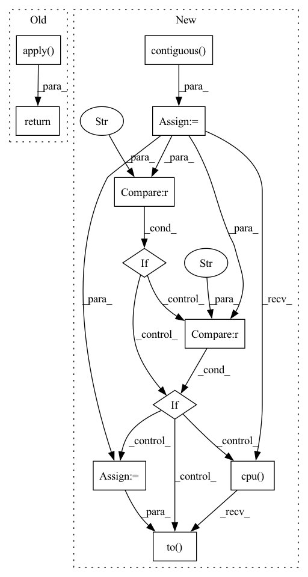

Pattern ID :8074

Before Change
if koffset is None:
return HashGPU.apply(idx)
else:
return KernelHashGPU.apply(idx, koffset)
After Change
offsets: Optional[torch.Tensor] = None) -> torch.Tensor:
assert coords.dtype == torch.int, coords.dtype
assert coords.ndim == 2 and coords.shape[1] == 4, coords.shape
coords = coords.contiguous()
// TODO(Zhijian): We might be able to merge `hash_kernel` and `hash`.
if offsets is None:
if coords.device.type == "cuda":
return torchsparse.backend.hash_cuda(coords)
elif coords.device.type == "cpu":
return torchsparse.backend.hash_cpu(coords)
else:
device = coords.device
return torchsparse.backend.hash_cpu(coords.cpu()).to(device)
else:
assert offsets.dtype == torch.int, offsets.dtype
assert offsets.ndim == 2 and offsets.shape[1] == 3, offsets.shape
offsets = offsets.contiguous()
if coords.device.type == "cuda":
return torchsparse.backend.kernel_hash_cuda(coords, offsets)
elif coords.device.type == "cpu":
return torchsparse.backend.kernel_hash_cpu(coords, offsets)
else:
device = coords.device
return torchsparse.backend.kernel_hash_cpu(coords.cpu(),
offsets.cpu()).to(device)
In pattern: SUPERPATTERN
Frequency: 3
Non-data size: 11
Instances
Fragment ID: 28641876
Project Name: mit-han-lab/torchsparse
Commit Name: 74099d10a51c71c14318bce63d6421f698b24f24
Time: 2021-06-24
Author: zhijianliu.cs@gmail.com
File Name: torchsparse/nn/functional/hash.py
M Class Name: AnonimousClass
N Class Name: AnonimousClass
M Method Name: sphash(2)
N Method Name: sphash(2)
M Parent Class:
N Parent Class:
M File Name: torchsparse/nn/functional/hash.py
N File Name: torchsparse/nn/functional/hash.py
M Start Line: 37
M End Line: 41
N Start Line: 10
N End Line: 37
'>
Before Change
def sphashquery(hash_query, hash_target):
return SparseQuery.apply(hash_query, hash_target)
After Change
def sphashquery(queries: torch.Tensor,
references: torch.Tensor) -> torch.Tensor:
queries = queries.contiguous()
references = references.contiguous()
sizes = queries.size()
queries = queries.view(-1)
indices = torch.arange(len(references),
device=queries.device,
dtype=torch.long)
if queries.device.type == "cuda":
output = torchsparse.backend.hash_query_cuda(queries, references,
indices)
elif queries.device.type == "cpu":
output = torchsparse.backend.hash_query_cpu(queries, references,
indices)
else:
device = queries.device
output = torchsparse.backend.hash_query_cpu(queries.cpu(),
references.cpu(),
indices.cpu()).to(device)
output = (output - 1).view(*sizes)
return output
'>
Fragment ID: 28641910
Project Name: mit-han-lab/torchsparse
Commit Name: 74099d10a51c71c14318bce63d6421f698b24f24
Time: 2021-06-24
Author: zhijianliu.cs@gmail.com
File Name: torchsparse/nn/functional/query.py
M Class Name: AnonimousClass
N Class Name: AnonimousClass
M Method Name: sphashquery(2)
N Method Name: sphashquery(2)
M Parent Class:
N Parent Class:
M File Name: torchsparse/nn/functional/query.py
N File Name: torchsparse/nn/functional/query.py
M Start Line: 39
M End Line: 40
N Start Line: 8
N End Line: 33
'>
Before Change
def spcount(idx, num):
return CountGPU.apply(idx, num)
After Change
def spcount(coords: torch.Tensor, num: torch.Tensor) -> torch.Tensor:
coords = coords.contiguous()
if coords.device.type == "cuda":
return torchsparse.backend.count_cuda(coords, num)
elif coords.device.type == "cpu":
return torchsparse.backend.count_cpu(coords, num)
else:
device = coords.device
return torchsparse.backend.count_cpu(coords.cpu(), num).to(device)
'>
Fragment ID: 28641881
Project Name: mit-han-lab/torchsparse
Commit Name: 74099d10a51c71c14318bce63d6421f698b24f24
Time: 2021-06-24
Author: zhijianliu.cs@gmail.com
File Name: torchsparse/nn/functional/count.py
M Class Name: AnonimousClass
N Class Name: AnonimousClass
M Method Name: spcount(2)
N Method Name: spcount(2)
M Parent Class:
N Parent Class:
M File Name: torchsparse/nn/functional/count.py
N File Name: torchsparse/nn/functional/count.py
M Start Line: 17
M End Line: 18
N Start Line: 8
N End Line: 16